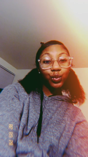

I was born on Monday, December 8,2003, in Baltimore City, MD. I wasn't born in a hopsital, I was born in my house on Garrison Avenue in the Park Heights community. I have 6 brothers and 1 sister. Growing up I always had very little friends because in school nobody really liked me. I have no idea why and till this day I still couldn't tell you why. I attended Langston Hughes Elementary School till the age of 10,but I never graduated the 5th grade because I transfered into KIPP where 5th grade was considered middle school. I had a long dreadful 4 years in middle school because of a lot of personal things going on at home and also problems in school. I was hit with a tragedy in the 6th grade and a lot of family issues. Resaults of generational trauma in my family led me to want to help people and connect to people to let them know that somebody in their life cares abut them. I will spend my life reaching that goal.
Initially I was not really interested in web development, but I am open to anything because you can never have too much knowledge. As I started learning about code and web development it peeked my intrest more. I would love to expand my interests so code in schools is a great opportunity. I still have not warmed up to this specific task but i am trying my best. Hopefully I will only get better and code a little as a hobby in the future.